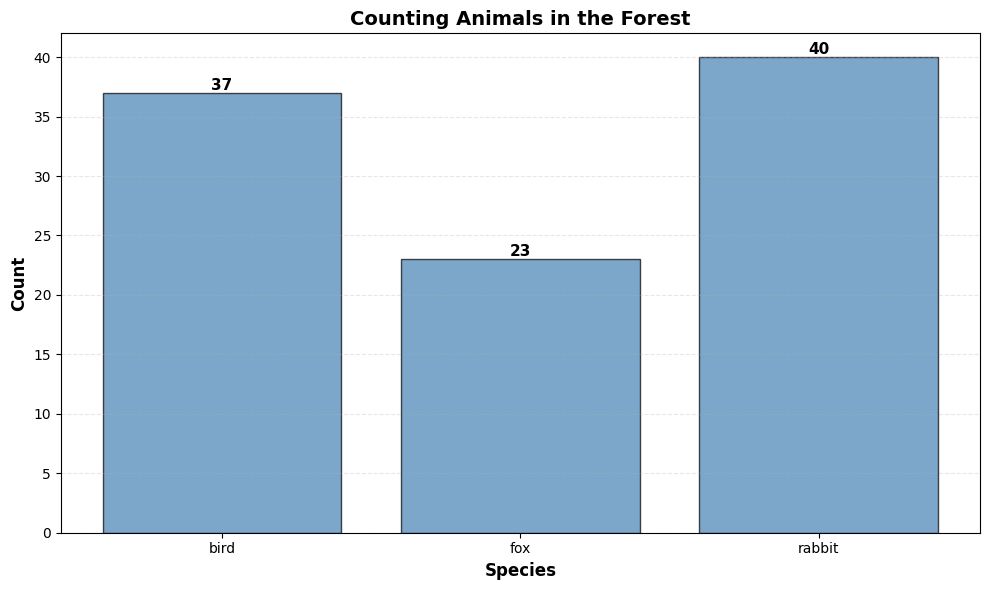

Diving Into The Factor Graph Approach
Suppose we begin with some finite distribution of a single variable. For example, we might be interested in the number of birds, number of rabbits, and number of foxes in a given forest. We then sample, say, 100 animals, and get their distributions.
